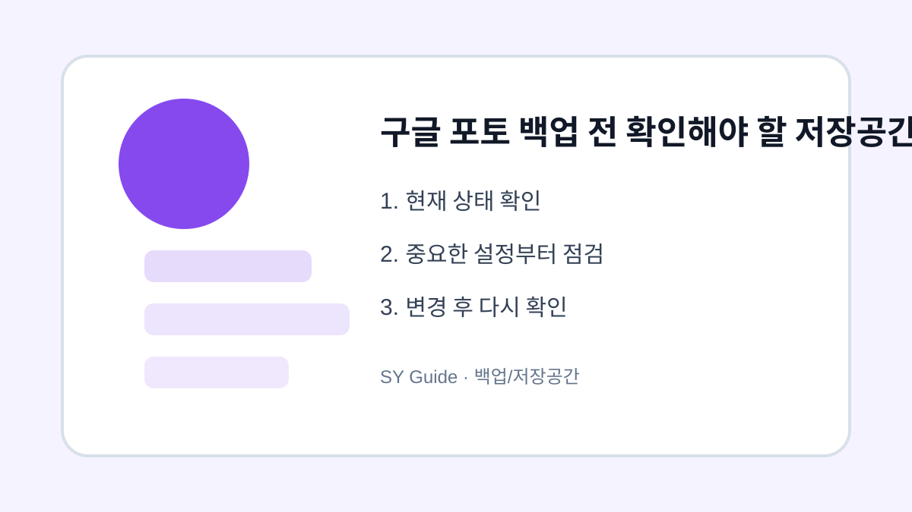

구글 포토 백업 전 확인해야 할 저장공간 기준
구글 포토 백업을 켜기 전에 계정 저장공간, 원본 화질, 절약 화질, 동기화 범위를 비교해 확인하는 방법입니다.

사진 백업은 한 번 켜두면 편하지만, 어떤 품질로 저장되는지 모른 채 사용하면 저장공간이 빠르게 줄어들 수 있습니다. 구글 포토는 사진과 동영상을 Google 계정 저장공간과 연결해 관리하므로 Gmail, Drive 사용량까지 함께 영향을 받습니다. 백업 전 기준을 먼저 정하면 나중에 정리 부담이 줄어듭니다.
계정 저장공간부터 확인하기
백업을 켜기 전에 Google 계정의 남은 저장공간을 확인합니다. 사진만 보는 것이 아니라 메일 첨부파일, 드라이브 문서, 동영상 파일까지 합산됩니다. 남은 공간이 적다면 오래된 동영상이나 중복 사진을 먼저 정리한 뒤 백업을 시작하는 편이 좋습니다.
원본 화질과 저장공간 절약 화질 비교
원본 화질은 촬영한 품질을 최대한 유지하지만 공간을 많이 씁니다. 저장공간 절약 화질은 용량을 줄여 더 오래 보관하기 좋지만, 확대하거나 인화할 사진에는 아쉬울 수 있습니다. 가족사진, 업무 사진, 여행 영상처럼 보관 목적이 다르면 화질 선택도 달라져야 합니다.
| 구분 | 장점 | 주의할 점 |
|---|---|---|
| 원본 화질 | 품질 유지 | 저장공간 사용량 큼 |
| 저장공간 절약 | 용량 부담 적음 | 세밀한 품질 저하 가능 |
| 와이파이 백업 | 데이터 요금 절약 | 백업 완료까지 시간 필요 |
| 모바일 데이터 백업 | 즉시 백업 가능 | 요금제 사용량 확인 필요 |
백업 완료 표시 확인하기
사진을 지우기 전에는 반드시 백업 완료 표시를 확인해야 합니다. 앱에서 보이는 사진이라도 아직 업로드 중일 수 있고, 와이파이 연결이 끊겨 일부만 백업됐을 수도 있습니다. 다른 기기나 웹에서 사진이 열리는지 확인하면 더 안전합니다.
삭제하거나 옮기기 전 마지막 확인
- Google 계정 전체 저장공간 확인하기
- 원본 화질과 저장공간 절약 화질 중 목적에 맞게 선택하기
- 와이파이 백업 여부 확인하기
- 백업 완료 전 원본 사진 삭제하지 않기
- 중요 사진은 다른 저장장치에도 한 번 더 보관하기
구글 포토 백업은 편리한 도구지만 유일한 보관 장소로 생각하면 위험할 수 있습니다. 중요한 자료는 클라우드와 외장 저장장치처럼 두 곳 이상에 나누어 보관하는 습관이 좋습니다.
구글 포토 백업 전 확인할 상황
구글 포토는 동기화가 편하지만 저장공간 정책과 화질 설정을 이해하지 못하면 예상보다 빨리 용량이 찰 수 있습니다. 백업 계정, 업로드 화질, 모바일 데이터 사용 여부를 먼저 확인하는 것이 좋습니다.
구글 포토 사용 중 흔한 실수
휴대폰에서 삭제하면 클라우드에서도 사라지는지 헷갈리는 경우가 많습니다. 삭제 전에는 백업 완료 표시와 휴지통 보관 기간을 확인하고, 중요한 사진은 별도 폴더나 PC에도 보관해 두면 안전합니다.
구글 포토 백업 관련 설정을 먼저 확인해야 하는 이유
구글 포토 백업 관련 설정은 단순히 메뉴 하나를 켜고 끄는 문제가 아니라, 실제 사용 흐름에서 어떤 불편을 줄이려는지 먼저 정해야 합니다. 같은 메뉴라도 기기 제조사, 운영체제 버전, 앱 업데이트 상태에 따라 이름이 달라질 수 있으므로 현재 화면을 기준으로 차근차근 확인하는 것이 좋습니다.
구글 포토 백업에서 자주 생기는 실수
구글 포토 백업을 정리할 때는 되돌리기 어려운 삭제나 계정 변경을 마지막 단계로 미루는 것이 좋습니다. 먼저 표시, 알림, 권한처럼 쉽게 복구할 수 있는 항목부터 확인하면 실수 부담을 줄일 수 있습니다.
구글 포토 백업 점검 후 다시 볼 부분
구글 포토 백업은 사용자마다 필요한 범위가 다르기 때문에, 자주 쓰는 앱과 계정부터 적용하는 편이 좋습니다. 바꾸기 전 화면과 바꾼 뒤 결과를 비교하면 어떤 설정이 실제로 도움이 됐는지 판단하기 쉽습니다.